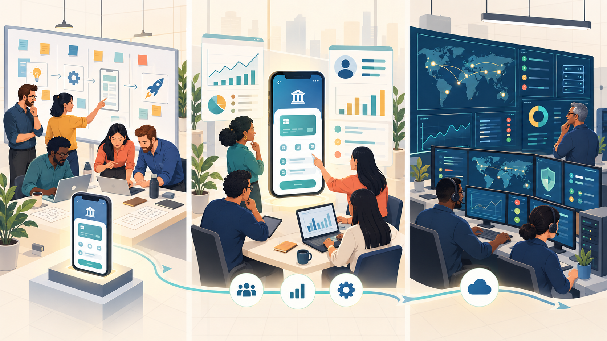
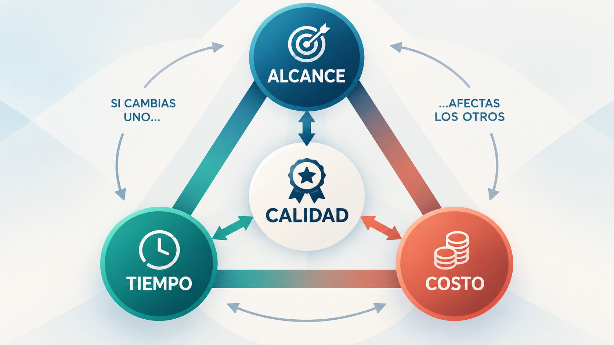
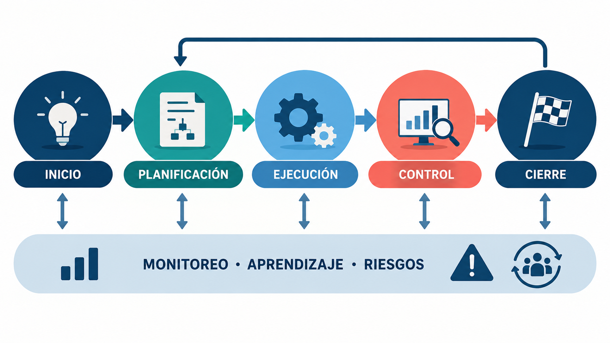
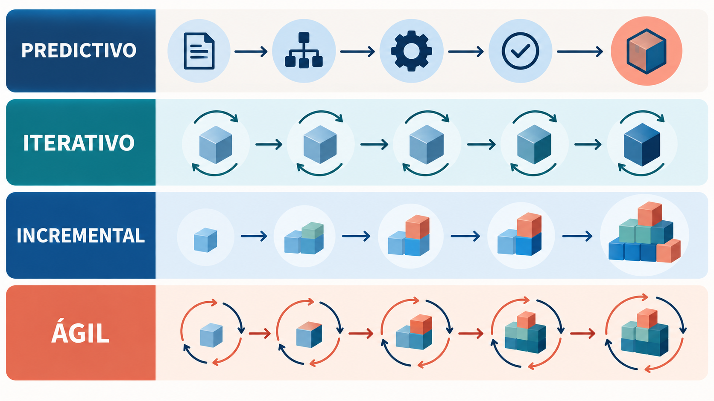

Imaginá que una universidad te pide un asistente con inteligencia artificial para responder consultas sobre horarios y trámites. La primera idea parece sencilla: cargar información y abrir un chat. Al probarlo descubrís que algunas preguntas son ambiguas, que ciertos documentos están desactualizados y que una respuesta convincente puede ser incorrecta. ¿Cómo organizás el trabajo para aprender esto a tiempo y entregar algo útil?
En esta materia vas a aprender a gestionar proyectos de forma ágil: avanzar con un plan, comprobar resultados y ajustar decisiones a partir de lo que aprendés. El caso del asistente universitario es un escenario didáctico. No necesitás saber entrenar modelos ni conocer ninguna herramienta para seguirlo.
Cómo recorrer este módulo
- Comprender qué es un proyecto, qué se gestiona y quiénes intervienen.
- Reconocer límites, ciclo de vida y decisiones de cambio.
- Comparar enfoques predictivos, iterativos e incrementales.
- Comprender la agilidad, su origen, valores y principios.
- Elegir un enfoque según incertidumbre, riesgo y evidencia, incluido un proyecto de IA.
Los nombres de los marcos aparecerán en el panorama de la sección 10. Sus roles, reuniones y reglas se explican en el Módulo 2, después de comprender para qué sirven. Aquí nos concentramos en los fundamentos.
1. Concepto de proyecto y gestión de proyectos
¿Crear un asistente y atender consultas todos los días son el mismo trabajo? Para organizarlos bien necesitamos distinguir el esfuerzo de construir una solución de su funcionamiento cotidiano.
Un proyecto es un esfuerzo temporal para crear un producto, servicio o resultado único. Tiene un inicio y un cierre. Temporal no significa breve: puede durar semanas o años. Único tampoco significa que nadie haya hecho algo parecido; significa que el resultado responde a condiciones y necesidades particulares.
Analogía de una mudanza. Mudarte tiene un objetivo, un inicio y un final: dejarte instalado en la nueva vivienda. Empacar, contratar transporte y coordinar horarios son actividades del proyecto. Vivir después en esa casa es otra cosa. En tecnología, construir y poner a prueba el asistente es el proyecto; atender consultas una vez disponible pertenece a su funcionamiento.
1.1 Un proyecto necesita límites
En nuestro caso, un primer proyecto podría ser preparar y evaluar un asistente para consultas sobre inscripciones en seis semanas. Necesitamos acordar qué información utilizará, quién revisará las respuestas, cuánto podemos gastar y cómo reconoceremos un resultado aceptable. La fecha y el alcance son supuestos del ejemplo, no una receta para todos los proyectos de IA.
1.2 Qué significa gestionar
La gestión de proyectos coordina conocimientos, personas, recursos y decisiones para alcanzar el objetivo. Incluye planificar, gestionar riesgos, comunicar avances y revisar resultados. No alcanza con repartir tareas: podemos completar muchas actividades y aun así entregar una solución que no sirve.
Por ejemplo, “cargar veinte documentos” describe trabajo realizado. “Responder correctamente consultas de inscripción con información vigente” expresa una capacidad que necesitamos comprobar. El tablero ayuda a organizar el trabajo; las pruebas permiten saber si conseguimos el resultado.
Criterio profesional. Antes de elegir una herramienta, explicá qué problema querés resolver, para quién y cómo vas a reconocer que está resuelto.
2. Proyecto, producto y operación
Uno de los errores más comunes entre quienes se inician en la gestión de proyectos es confundir tres conceptos que están relacionados pero que no son lo mismo: proyecto, producto y operación. Distinguirlos con claridad es fundamental porque cada uno implica una lógica de gestión distinta, con objetivos, métricas de éxito y horizontes temporales diferentes.
2.1 Diferentes horizontes
Un proyecto, como vimos, es un esfuerzo temporal con un principio y un fin, orientado a crear algo único. Un producto, en cambio, es el resultado tangible o intangible que ese proyecto —o una sucesión de proyectos e iteraciones— genera, y que tiene un ciclo de vida propio que puede extenderse durante años: nace, crece, madura y eventualmente declina o se discontinúa. Pensemos en Spotify: el desarrollo inicial de la plataforma fue (o incluyó) uno o varios proyectos, pero Spotify como producto sigue vivo, evolucionando constantemente a través de nuevas funcionalidades, cada una de las cuales puede gestionarse como un proyecto o como parte de un flujo continuo de trabajo.
La operación, por su parte, es el conjunto de actividades permanentes y repetitivas que mantienen el negocio funcionando día a día. Si el proyecto fue desarrollar el sistema de facturación electrónica de una empresa, la operación es el proceso diario de emitir facturas, procesar pagos y responder consultas de soporte una vez que el sistema ya está en producción. La operación no tiene fecha de fin: es continua, cíclica, y su éxito se mide con indicadores de eficiencia y estabilidad (tiempo de actividad del sistema, tickets resueltos por día, tasa de errores) más que con el cumplimiento de un alcance único.
2.2 Equipos y continuidad
En el mundo del desarrollo de software esta distinción se vuelve particularmente relevante cuando hablamos de equipos de producto versus equipos de proyecto. Un equipo de producto trabaja de manera continua sobre una misma base de código o plataforma, incorporando mejoras de forma incremental durante meses o años, sin que exista necesariamente una fecha de "cierre". Un equipo de proyecto, en cambio, se conforma para un objetivo acotado —por ejemplo, migrar la infraestructura a la nube— y se disuelve o se reasigna una vez que ese objetivo se cumple.
Muchas organizaciones ágiles modernas tienden a organizar su trabajo alrededor de productos persistentes en lugar de proyectos discretos, precisamente porque el software rara vez "termina": se libera una versión, se recibe feedback, se ajusta, y el ciclo continúa indefinidamente mientras el producto siga vigente en el mercado.
| Dimensión | Proyecto | Producto | Operación |
|---|---|---|---|
| Duración | Temporal, con fecha de inicio y fin | Puede extenderse por años, mientras tenga vigencia en el mercado | Continua, sin fecha de finalización prevista |
| Objetivo | Entregar un resultado único y definido | Generar y sostener valor para los usuarios a lo largo del tiempo | Mantener el funcionamiento estable del negocio día a día |
| Equipo | Se conforma y se disuelve según el proyecto | Suele ser estable, dedicado de forma permanente al producto | Personal fijo de soporte, mantenimiento y atención |
| Ejemplo en software | Desarrollar una nueva app de pagos móviles | La app de pagos evolucionando con nuevas features durante años | Mesa de ayuda que atiende incidentes de la app en producción |
| Métrica de éxito | Cumplimiento de alcance, tiempo, costo y calidad pactados | Adopción, retención, satisfacción del usuario, ingresos generados | Disponibilidad, tiempo de respuesta, resolución de incidentes |

3. Quiénes participan en un proyecto: stakeholders y roles
El equipo construye un asistente que responde con claridad, pero la oficina de alumnos descubre que cita una fecha del año anterior. ¿Quién tenía que revisar la información? La calidad del resultado depende de reconocer a las personas involucradas y acordar cómo participan.
Un stakeholder, o parte interesada, es una persona, grupo u organización que puede afectar al proyecto o verse afectado por él. Un rol es una función con responsabilidades. Una misma persona puede ser parte interesada y desempeñar un rol.
3.1 Personas que necesitamos reconocer
| Participante | Qué aporta o necesita | Ejemplo de participación |
|---|---|---|
| Patrocinador o sponsor | Respaldo, recursos y decisiones dentro de su autoridad. | Autorizar el piloto y su presupuesto. |
| Cliente | La necesidad por la que encarga la solución. | La universidad solicita mejorar la atención. |
| Usuarios | Experiencia directa de uso. | Estudiantes prueban si entienden las respuestas. |
| Equipo que construye | Habilidades técnicas y de diseño. | Preparar datos, integrar el sistema y verificarlo. |
| Especialistas del dominio | Conocimiento del problema y sus reglas. | La oficina de alumnos valida fechas y trámites. |
| Operaciones y seguridad | Continuidad del servicio y controles necesarios. | Revisar acceso a información y respuesta a incidentes. |
El cliente y el usuario pueden ser personas diferentes: la universidad encarga el asistente, mientras los estudiantes lo utilizan. Tampoco alcanza con escuchar a quien paga. Quienes usan, mantienen o resultan afectados por el sistema aportan información que puede cambiar decisiones importantes.
3.2 Especialidad y responsabilidad son distintas
Programación, ciencia de datos, diseño y pruebas son especialidades. Decidir prioridades o aprobar un piloto son responsabilidades. Ser especialista en modelos no te convierte automáticamente en quien decide qué problema debe atenderse primero.
Analogía de una producción audiovisual. Saber operar la cámara no equivale a decidir qué historia se quiere contar. Ambas funciones se necesitan y deben coordinarse. En un proyecto de IA, quien conoce los modelos y quien conoce las necesidades de los usuarios tienen que conversar para construir una solución útil.
Algunas organizaciones designan a una persona para coordinar la gestión del proyecto. Su autoridad depende de los acuerdos establecidos. Los marcos de trabajo que estudiaremos después pueden distribuir responsabilidades de otra manera; todavía no necesitamos sus nombres para entender quién aporta, quién decide y quién realiza el trabajo.
3.3 Comunicar y acordar quién decide
La matriz de poder e interés ayuda a pensar qué participación necesita cada parte interesada. Quien puede autorizar recursos y está involucrado requiere una comunicación cercana; un usuario necesita canales para aportar experiencia. La matriz orienta la atención, pero no justifica ignorar a personas con poca autoridad que pueden sufrir las consecuencias de una decisión.
La matriz RACI permite aclarar la participación en una actividad: R realiza el trabajo; A responde por el resultado y tiene la autoridad acordada; C aporta conocimiento antes de decidir; I recibe información. Es una herramienta opcional, no una exigencia de toda gestión ágil.
Para revisar los documentos del asistente, una persona del equipo prepara el material (R), la persona autorizada de la oficina de alumnos responde por su vigencia (A), otras áreas aportan aclaraciones (C) y soporte conoce la versión aprobada (I). La letra A no significa que esa persona deba imponer cada decisión técnica.
Criterio profesional. Para cada decisión importante, identificá quién conoce el problema, quién puede decidir, quién realiza el trabajo y quién necesita conocer el resultado.
4. Alcance, tiempo, costo y calidad
Uno de los conceptos más citados —y a veces mal utilizados— en la gestión de proyectos es el de la triple restricción (triple constraint), también conocido como el "triángulo de hierro" del proyecto. La idea central es sencilla: todo proyecto está limitado por tres variables que se encuentran en tensión permanente entre sí —alcance, tiempo y costo— y que la calidad del resultado depende del equilibrio que se logre entre ellas.
4.1 Qué limita el proyecto
El alcance define qué es lo que el proyecto va a entregar: qué funcionalidades tendrá el sistema, qué características incluye el producto, qué está dentro y qué está fuera de los límites del trabajo acordado. El tiempo se refiere al cronograma: cuánto va a durar el proyecto, cuáles son sus hitos y su fecha de entrega. El costo representa el presupuesto disponible, que en un proyecto de software suele estar dominado por el costo de las horas-persona del equipo, aunque también incluye licencias, infraestructura en la nube y otros insumos.
La calidad, que algunos autores ubican como una cuarta restricción y otros como el resultado del equilibrio entre las tres primeras, se refiere al grado en que el producto entregado cumple con los requisitos funcionales y no funcionales esperados, y con los estándares profesionales de construcción de software (buenas prácticas de código, pruebas adecuadas, seguridad, performance).
4.2 Cómo negociar un cambio
La lógica de la triple restricción establece que estas variables están interrelacionadas: si se modifica una, inevitablemente impacta en al menos una de las otras dos, y por lo tanto en la calidad del resultado final. Supongamos un proyecto de desarrollo de una app bancaria con un alcance, un cronograma y un presupuesto ya definidos. Si a mitad de camino el cliente solicita agregar una nueva funcionalidad de pagos por código QR (es decir, aumenta el alcance) sin mover la fecha de entrega ni el presupuesto, lo más probable es que la calidad se resienta: el equipo tendrá que apurar el desarrollo, recortar pruebas o acumular deuda técnica para cumplir con el nuevo alcance en el mismo tiempo.
Alternativamente, el gestor de proyecto podría negociar una extensión del cronograma, un incremento del presupuesto (para sumar más desarrolladores, aunque esto no siempre acelera linealmente el trabajo, como advierte la conocida "ley de Brooks"), o la eliminación de otra funcionalidad de menor prioridad para compensar el nuevo pedido.
Una forma frecuente de organizar una entrega adaptativa es fijar un horizonte corto y una capacidad de equipo, y seleccionar alcance según valor y viabilidad. Eso no implica que todo proyecto ágil tenga presupuesto y fecha final invariables. En una planificación predictiva, alcance, cronograma y presupuesto forman una referencia acordada que también puede revisarse mediante control de cambios. En ambos enfoques hay restricciones; lo que cambia es cómo se decide y con qué frecuencia se contrasta el plan con nueva información.
| Variable | Enfoque predictivo (tradicional) | Enfoque ágil |
|---|---|---|
| Alcance | Se define con detalle suficiente para establecer una referencia; los cambios se evalúan. | Se desarrolla y ordena progresivamente; puede renegociarse según aprendizaje y restricciones. |
| Tiempo | Se planifica con hitos y fechas acordadas, que pueden ser restricciones firmes. | Puede acordarse un ciclo de trabajo breve; eso no fija por sí solo la fecha final del producto. |
| Costo | Se presupuestan recursos y trabajo; los cambios requieren evaluar su impacto. | Un equipo estable facilita prever el costo por período; el presupuesto total depende del horizonte y los acuerdos. |
| Qué se adapta ante un cambio | Se analiza qué referencia puede revisarse y se obtiene la autorización necesaria. | Se revisan prioridades y alcance respetando objetivos, calidad y controles necesarios. |

Del proyecto al aprendizaje. Ya sabemos qué buscamos, quién participa y qué restricciones existen. Ahora podemos preguntar cómo avanzar cuando todavía no conocemos toda la solución.
5. Ciclo de vida y procesos de gestión de un proyecto
¿El trabajo empieza cuando programamos o cuando reconocemos el problema? El ciclo de vida abarca el recorrido del proyecto desde su inicio hasta su cierre. Sus fases dependen del contexto: explorar, construir y poner en funcionamiento es una organización posible.
Para gestionar ese recorrido necesitamos iniciar, planificar, ejecutar, monitorear y controlar, y cerrar. Son funciones de gestión que pueden repetirse y superponerse; no cinco etapas obligatorias que se realizan una sola vez.
5.1 Inicio
Reconocemos la necesidad, el resultado buscado, las personas involucradas y las primeras restricciones. En el asistente, acordamos qué consultas abordar y quién puede autorizar el piloto. Un acta de constitución, también llamada project charter, puede registrar la autorización y los acuerdos de alto nivel.
5.2 Planificación
Decidimos cómo avanzar, qué recursos necesitamos y qué riesgos debemos investigar. Una estructura de descomposición del trabajo (EDT o WBS) divide el trabajo en partes para facilitar su planificación. Según el contexto, utilizamos esa u otras formas de organizarlo. Para el piloto planificamos preparar documentos, construir una primera capacidad y evaluar respuestas; revisamos el detalle a medida que aprendemos.
5.3 Ejecución
Realizamos el trabajo previsto. En un proyecto de IA incluye preparar datos, integrar componentes, diseñar la interacción y efectuar pruebas. Entrenar o elegir un modelo es solo una parte del sistema.
5.4 Monitoreo y control
Comparamos resultados con objetivos, reconocemos problemas y decidimos ajustes. Si la respuesta usa un documento obsoleto, investigamos la causa y revisamos el trabajo. Seguimos tiempo y recursos, pero también calidad y utilidad. Un porcentaje de tareas completadas no basta para describir la confiabilidad del asistente.
5.5 Cierre
Acordamos la aceptación del resultado, registramos aprendizajes y dejamos claras las responsabilidades siguientes. Puede terminar el proyecto piloto mientras el producto sigue evolucionando y operaciones atiende incidentes. Cerrar una entrega tampoco significa necesariamente cerrar todo el proyecto.
Analogía de organizar una expedición. Necesitás acordar el destino, preparar recursos, avanzar y comprobar las condiciones. Si una ruta deja de ser segura, revisás el plan durante el viaje. Llegar también exige verificar el resultado y ordenar el regreso. Las funciones se conectan; no son compartimentos sin comunicación.
Criterio profesional. Volver a planificar cuando aparece evidencia relevante es una forma de control responsable.

6. Gestión predictiva y modelo en cascada
¿Cuándo tiene sentido decidir gran parte del trabajo antes de comenzar a construir? El enfoque predictivo busca anticipar alcance, plazos, recursos y riesgos a partir de requisitos suficientemente conocidos. Cascada (waterfall) es un modelo de desarrollo secuencial frecuentemente asociado a ese enfoque, pero no son sinónimos: una gestión predictiva puede incluir entregas parciales, revisiones y ajustes.
En una representación estricta de cascada, el desarrollo avanza por etapas como requisitos, diseño, implementación y verificación, con aprobaciones antes de avanzar. El nombre alude al paso de una etapa a otra. Volver sobre decisiones previas es posible, aunque puede exigir retrabajo considerable. Para evaluar este modelo importa observar cuándo se validan las hipótesis y cuánto cuesta corregirlas, no suponer que todo proyecto predictivo funciona exactamente igual.
El artículo de Winston Royce de 1970 sobre grandes sistemas de software suele citarse al discutir este modelo. Su propuesta también advertía riesgos del desarrollo puramente secuencial y planteaba revisiones. Por eso debemos evaluar cómo trabaja un proyecto concreto, en lugar de suponer que todas las organizaciones aplican una cascada idéntica.
En un proyecto gestionado bajo el enfoque cascada, el proceso típico comienza con una fase extensa de relevamiento y documentación de requisitos, en la que se intenta capturar de la manera más completa y precisa posible todo lo que el sistema deberá hacer. Sobre esa base se elabora un diseño detallado —arquitectura del sistema, modelo de datos, diseño de interfaces— que luego se traduce en código durante la fase de implementación.
Una vez desarrollado el sistema completo (o una parte significativa de él), se ejecuta una fase de pruebas y verificación, y finalmente el sistema se libera a producción, entrando en una fase de mantenimiento que puede extenderse durante años.
6.1 Cuándo aporta y qué riesgo tiene
Este enfoque presenta ventajas claras en determinados contextos: cuando los requisitos son estables y bien comprendidos desde el inicio, cuando existen restricciones contractuales o regulatorias que exigen documentación exhaustiva y aprobaciones formales en cada etapa (por ejemplo, en proyectos de software para la industria aeroespacial, médica o de defensa), o cuando el costo de introducir cambios en etapas avanzadas es extremadamente alto (como en sistemas embebidos en hardware que, una vez fabricado, es muy costoso modificar).
La planificación detallada permite, además, estimar con mayor precisión presupuestos y plazos al inicio del proyecto, algo que muchas organizaciones —y especialmente los departamentos de compras o los organismos públicos que licitan desarrollos— valoran y en muchos casos exigen.
Cuando la solución contiene mucha incertidumbre, esperar hasta el final para comprobarla puede hacer costosa la corrección. En el asistente, decidir todas las respuestas antes de probar consultas reales podría ocultar documentos contradictorios o necesidades mal comprendidas. Necesitamos obtener esa información antes de ampliar la construcción.
7. Enfoques predictivos, iterativos e incrementales
Para comprender en profundidad el terreno sobre el que se asienta la agilidad, es necesario distinguir con precisión tres términos que suelen mencionarse juntos pero que refieren a características distintas de cómo se organiza el trabajo de un proyecto: predictivo, iterativo e incremental. Estas categorías no son necesariamente excluyentes —de hecho, la mayoría de los marcos ágiles combinan características iterativas e incrementales— pero entenderlas por separado ayuda a evitar la simplificación de reducir todo a una dicotomía entre "cascada" y "ágil".
El enfoque predictivo, como vimos en el apartado anterior, busca anticipar alcance, cronograma, presupuesto y riesgos cuando existe información suficientemente confiable. Puede organizar el desarrollo de manera secuencial, pero no obliga a una única entrega ni prohíbe revisar el plan. El énfasis está en establecer una referencia que permita coordinar y controlar el trabajo.
7.1 Mejorar y ampliar son movimientos distintos
El enfoque iterativo, en cambio, organiza el trabajo en ciclos repetidos (iteraciones) durante los cuales se revisa y refina el producto o partes de él. En un desarrollo iterativo, el equipo puede construir una primera versión rudimentaria de una funcionalidad, obtener feedback, y luego volver sobre esa misma funcionalidad para mejorarla en una iteración posterior. La clave del enfoque iterativo es que permite aprender y ajustar el rumbo a medida que el proyecto avanza, en lugar de intentar definirlo todo de antemano.
Un ejemplo clásico es el desarrollo de un algoritmo de recomendación: en la primera iteración se implementa una versión simple basada en popularidad, se mide su desempeño, y en iteraciones sucesivas se van incorporando variables más sofisticadas (historial del usuario, comportamiento de usuarios similares, contexto temporal) según lo que el aprendizaje de cada ciclo indique que aporta más valor.
El enfoque incremental organiza el trabajo en partes o "incrementos" que se van entregando de manera sucesiva, cada uno añadiendo funcionalidad nueva y utilizable sobre lo ya construido, hasta completar el producto final. A diferencia del enfoque iterativo, donde se vuelve sobre lo mismo para mejorarlo, en el enfoque incremental cada entrega agrega algo nuevo que antes no existía. Pensemos en el desarrollo de una plataforma de streaming de video: un primer incremento podría ser la posibilidad de ver contenido en un catálogo fijo; un segundo incremento agrega la función de listas personalizadas; un tercero suma recomendaciones; un cuarto incorpora la posibilidad de descargar contenido offline.
Cada incremento es funcional por sí mismo y aporta valor al usuario, aun cuando el producto completo todavía no esté terminado.
Podemos iterar e incrementar al mismo tiempo. El asistente mejora sus respuestas de inscripción después de las pruebas (iteración) y luego agrega consultas sobre becas verificadas (incremento). La combinación permite aprender sobre lo construido y ampliar la capacidad del producto. Un experimento que no produce una mejora todavía puede aportar aprendizaje; no lo confundimos con una entrega utilizable.
| Enfoque | Lógica de trabajo | Cuándo aporta más valor | Ejemplo |
|---|---|---|---|
| Predictivo | Establecer referencias de alcance, tiempo y recursos con información confiable; no obliga a una ejecución secuencial. | Requisitos estables, alta necesidad de previsibilidad contractual | Desarrollo de firmware para un dispositivo médico certificado |
| Iterativo | Ciclos repetidos que refinan el mismo producto o componente | Alta incertidumbre sobre la solución óptima, necesidad de aprender haciendo | Ajuste sucesivo de un algoritmo de recomendación |
| Incremental | Entregas sucesivas que suman funcionalidad nueva y usable | Necesidad de generar valor temprano y en partes | Lanzamiento progresivo de funciones en una app de streaming |

8. Gestión del cambio en enfoques predictivos y ágiles
Durante el piloto, los estudiantes piden que el asistente inscriba automáticamente a una materia. ¿Alcanza con agregar esa tarea? El pedido transforma una solución que informa en otra que actúa sobre un trámite; cambia el riesgo y requiere revisar permisos, validación y alcance.
La gestión del cambio permite registrar una necesidad nueva, analizar sus consecuencias y decidir qué hacer. En una gestión predictiva se evalúa cómo afecta a las referencias acordadas de alcance, tiempo y costo. El procedimiento de aprobación depende de la organización y de la importancia de la decisión.
En una gestión adaptativa revisamos las necesidades con frecuencia y ajustamos prioridades según evidencia. Eso no elimina acuerdos contractuales, controles de seguridad ni decisiones de autorización. Aceptar un cambio tampoco significa comenzarlo de inmediato.
8.1 Una secuencia para decidir
- Comprender qué problema resuelve el pedido y para quién.
- Identificar impacto, riesgos, dependencias y controles necesarios.
- Comparar el pedido con el trabajo pendiente y la capacidad disponible.
- Acordar si se incorpora, se investiga, se posterga o se rechaza.
- Registrar la decisión y comprobar después si produce el beneficio esperado.
La expansión descontrolada del alcance, o scope creep, aparece cuando se incorpora trabajo sin revisar los acuerdos y sus efectos. La alternativa ágil requiere hacer visible la decisión. Para nuestro piloto podemos investigar la inscripción automática y continuar ofreciendo información validada; todavía no prometemos una función cuya viabilidad no comprobamos.
Criterio profesional. Ante un pedido nuevo, explicá qué cambia, qué trabajo se desplazaría y quién tiene autoridad para acordarlo.
9. Qué es la agilidad
Analogía: un viaje con GPS. La agilidad se parece a elegir un destino, iniciar una ruta razonable y recalcular al encontrar un corte. Recalcular no cambia automáticamente el destino ni autoriza ignorar las reglas de tránsito. En un proyecto, el destino es el resultado buscado; la ruta es el plan; las observaciones del equipo y de los usuarios permiten ajustarlo. La comparación termina ahí: el valor de un producto no está definido tan claramente como una dirección. También debemos comprobar si el destino elegido resuelve una necesidad real.
Primero vamos a comprender la agilidad, su origen y el Manifiesto. Después compararemos enfoques y veremos cómo organizar ciclos de aprendizaje y entrega. Así podremos elegir una forma de trabajo por su propósito y sus límites.
9.1 Aprender con evidencia
Trabajar de manera ágil no significa hacer todo más rápido ni aceptar cualquier pedido de inmediato. Significa acortar el tiempo entre una decisión y la evidencia que permite revisarla. En lugar de esperar a tener toda la app bancaria terminada, el equipo puede entregar una capacidad utilizable, observar qué dificultades encuentran los usuarios y ajustar las prioridades antes de invertir en el resto. Esa entrega necesita calidad suficiente para ser usada: una pantalla incompleta no demuestra que el problema esté resuelto.
La expresión metodologías ágiles agrupa distintas maneras de organizar ese trabajo. No existe una única receta llamada Agile ni una lista universal de reuniones o roles. En la sección 10 vamos a conocer el mapa de alternativas.
- Se planifica: la profundidad y el horizonte del plan se ajustan a lo que realmente sabemos.
- Se controla: el progreso se contrasta con resultados utilizables y con señales de valor, no solo con tareas iniciadas.
- Se colabora: negocio, usuarios y equipo aportan información para resolver dudas y revisar decisiones.
- Se adapta: cambiar prioridades exige considerar capacidad, calidad y restricciones; no elimina los acuerdos.
Al finalizar este módulo vas a poder distinguir una respuesta ágil de una improvisación. En el siguiente vas a ver cómo los marcos y métodos organizan ese trabajo cotidiano.
10. Origen de la agilidad
¿Por qué empezó a cuestionarse la idea de definirlo todo al principio? En software, construir y probar una solución suele revelar necesidades que los documentos iniciales no habían previsto. Si esa información llega al final, corregir puede exigir rehacer mucho trabajo.
Durante los años noventa, distintos equipos y profesionales desarrollaron formas de trabajar con colaboración cercana, entregas frecuentes y aprendizaje. No surgió una única receta: había propuestas con énfasis diferentes en organización, calidad técnica y adaptación.
En febrero de 2001, diecisiete profesionales se reunieron en Snowbird, Utah, y formularon el Manifiesto por el Desarrollo Ágil de Software. El encuentro puso en común experiencias previas; no inventó de cero la colaboración ni las entregas parciales.
Para este módulo importa comprender el problema que intentaban resolver: obtener evidencia y responder a ella durante el desarrollo. Los nombres y mecanismos de sus propuestas se estudian después. La historia oficial del Manifiesto permite ampliar este contexto.
Criterio profesional. Una práctica resulta útil por el problema que ayuda a resolver. Comprender su propósito permite adaptarla con criterio.
11. El Manifiesto Ágil
Si el equipo completó cien páginas de documentación, pero el asistente responde con información incorrecta, ¿podemos decir que avanzó lo suficiente? El Manifiesto nos ayuda a pensar qué debemos priorizar cuando distintas actividades compiten por tiempo y atención.
El Manifiesto Ágil expresa cuatro valores. No define una herramienta ni prescribe reuniones o roles. Plantea prioridades: procesos, documentación, contratos y planes siguen siendo útiles; su cumplimiento no debe reemplazar la colaboración ni la comprobación del resultado.
| Qué se prioriza | Qué se conserva como apoyo | Ejemplo |
|---|---|---|
| Las personas y sus interacciones. | Procesos y herramientas. | Conversar con la oficina de alumnos para resolver una fecha ambigua. |
| Una solución de software que funciona. | Documentación suficiente y útil. | Evaluar respuestas con consultas de prueba y registrar fuentes y resultados. |
| Colaboración con el cliente. | Acuerdos contractuales. | Revisar el piloto con la universidad y negociar cambios explícitamente. |
| Adaptación a nueva información. | Planificación. | Corregir documentos desactualizados antes de agregar más temas. |
11.1 Personas y colaboración
Cuando aparece una duda, necesitamos a las personas capaces de resolverla. Un formulario o un tablero pueden registrar el problema, pero no conocen por sí mismos cuál es la fecha correcta de inscripción. La conversación aclara el significado; registrar la decisión evita que se pierda.
11.2 Resultado y documentación
El asistente debe permitir realizar la tarea prevista con calidad suficiente. Una demostración vistosa no acredita que las respuestas sean confiables. La documentación de fuentes, limitaciones y pruebas también aporta valor porque permite revisar y mantener el sistema.
11.3 Colaboración y acuerdos
Colaborar significa revisar necesidades y resultados con el cliente durante el trabajo. Los acuerdos siguen fijando responsabilidades, recursos y límites. Si cambia el alcance, se analiza el impacto y se acuerda cómo continuar.
11.4 Adaptación y planificación
El plan es una hipótesis de cómo alcanzar el objetivo con lo que sabemos hoy. Si las pruebas muestran un error importante, revisamos prioridades. Cambiar el plan requiere una razón y una decisión; aceptar cualquier pedido de inmediato produciría desorden.
Analogía de aprender a cocinar. La receta orienta, pero necesitás comprobar la cocción antes de servir. Si el resultado todavía no está listo, completar los pasos escritos no lo vuelve adecuado. En un proyecto, el plan guía y las pruebas aportan información para decidir. La analogía no sustituye las evaluaciones técnicas ni las obligaciones del producto.
Mito. Trabajar de forma ágil significa prescindir de documentación y planes. Realidad. Necesitamos los que ayuden a coordinar, verificar y mantener el resultado; también necesitamos revisar lo que hacemos cuando la evidencia contradice el plan.
Podés consultar la redacción original de los cuatro valores. La tabla presenta una explicación aplicada, no una transcripción.
12. Los 12 principios ágiles
Los valores orientan decisiones. Los doce principios desarrollan cómo llevar esa orientación al trabajo. Para estudiarlos, los agrupamos por preguntas; la agrupación es didáctica y conserva la numeración original.
12.1 Cómo entregar y aprender
- 1. Valor temprano. Entregar capacidades útiles pronto y continuar mejorándolas. En el asistente, empezar por consultas de inscripción bien verificadas puede ayudar antes que abarcar todos los trámites sin comprobarlos.
- 2. Aceptar cambios. Aprovechar información nueva, incluso avanzada la construcción. Si cambió una fecha, revisar los documentos importa más que conservar una respuesta ya implementada. Primero evaluamos el impacto.
- 3. Entregas frecuentes. Reducir la espera para comprobar software que funciona. En nuestro ejemplo, preparar revisiones periódicas permite descubrir errores antes de ampliar el piloto. La frecuencia depende del contexto.
- 7. Progreso verificable. Observar software funcionando como evidencia principal del avance del desarrollo. En IA, comprobar el funcionamiento incluye evaluar respuestas y limitaciones; que el chat se abra no es suficiente.
12.2 Cómo colaborar
- 4. Negocio y construcción juntos. Quienes conocen los trámites y quienes implementan el asistente colaboran de forma cotidiana. Separarlos hasta la entrega aumenta el riesgo de entender mal las reglas.
- 5. Apoyo y confianza. Dar a las personas motivadas el entorno y los recursos que necesitan. Pedir evaluación de respuestas sin acceso a documentos vigentes impide hacer bien el trabajo.
- 6. Comunicación directa. La conversación cara a cara es el medio que el texto original prioriza para comunicar información. Una videollamada puede ayudar a aclarar una duda en un equipo remoto; los registros escritos siguen siendo necesarios para compartir acuerdos y trabajar de manera asincrónica.
- 11. Autoorganización. Permitir que el equipo aporte su conocimiento para construir requisitos, arquitectura y diseño. La autonomía se ejerce dentro de objetivos, límites y responsabilidades acordadas.
12.3 Cómo sostener y mejorar el trabajo
- 8. Ritmo sostenible. Mantener una forma de trabajo que pueda sostenerse. Extender jornadas de manera permanente puede deteriorar la revisión y ocultar problemas de organización.
- 9. Excelencia técnica. Cuidar diseño y calidad para poder cambiar con confianza. En el asistente, registrar versiones de documentos y repetir pruebas ayuda a reconocer qué modificación provocó un error.
- 10. Simplicidad. Evitar trabajo que no contribuye al objetivo. Si un buscador de preguntas frecuentes resuelve la necesidad, sumar un agente complejo necesita una justificación.
- 12. Reflexión y mejora. Revisar periódicamente cómo trabajamos y ajustar el proceso. Si la validación de documentos demora las entregas, acordar revisiones más pequeñas puede ser un experimento de mejora.
Estas explicaciones son paráfrasis y ejemplos. La redacción original de los doce principios permite reconocer su contexto de desarrollo de software.
Criterio profesional. Evaluá los principios en comportamientos observables: qué se entrega, cómo se aprende, cómo se colabora y cómo se cuida la calidad.
13. Entrega de valor
El asistente genera respuestas más largas y usa un modelo más grande. ¿Eso significa que es más útil? Solo podemos responder si sabemos qué problema queríamos resolver y qué cambió para las personas que lo utilizan.
El valor es el beneficio que una solución aporta a sus usuarios o a la organización. No equivale a la cantidad de funcionalidades ni al tamaño del modelo. En nuestro caso puede ser que los estudiantes encuentren información vigente y sepan cuándo consultar a una persona.
13.1 Actividad, capacidad y beneficio
| Nivel | Ejemplo | Qué falta comprobar |
|---|---|---|
| Actividad | Cargar documentos. | Si son correctos y están vigentes. |
| Capacidad entregada | Responder consultas con referencia al documento utilizado. | Si las respuestas permiten resolver la consulta. |
| Beneficio | Estudiantes encuentran la respuesta correcta con menos dificultad. | Si ocurre en condiciones reales y para distintos grupos. |
Antes de construir, expresamos una hipótesis de valor: “si ofrecemos respuestas verificadas sobre inscripción, los estudiantes podrán resolver esas consultas con menos dificultad”. Elegimos señales para evaluarla, como corrección de respuestas, tiempo para resolver la tarea y necesidad de asistencia. Los resultados de un conjunto pequeño de pruebas no garantizan el comportamiento de todos los usuarios.
Priorizar implica comparar beneficio esperado, esfuerzo, riesgo y dependencias. Podemos apoyarnos en análisis costo-beneficio o en categorías de prioridad. En el Módulo 3 estudiaremos estas técnicas con detalle; aquí importa entender por qué algunas necesidades deben atenderse antes que otras.
Criterio profesional. Antes de proponer una funcionalidad, escribí para quién sería útil, qué mejoraría y con qué evidencia evaluarías esa mejora.
Ya tenemos criterios para juzgar las decisiones. Ahora podemos conocer las formas de organizar el trabajo sin confundirlas con herramientas.
14. Enfoques, metodologías y marcos de trabajo
¿Un enfoque, un marco y una herramienta son lo mismo? Para ubicarnos necesitamos distinguir la lógica de organización, la estructura de trabajo y los medios que utilizamos para coordinarlo. Este mapa introduce cada alternativa antes de comparar sus reglas.
| Concepto | Qué describe | Ejemplo |
|---|---|---|
| Enfoque | La lógica general para planificar, aprender y organizar las entregas. | Predictivo o adaptativo; iterativo e incremental describen cómo se construye y entrega. |
| Metodología o método | Una manera organizada de trabajar con principios, procedimientos y prácticas. | Kanban ayuda a observar cómo avanzan las tareas y a terminar trabajo antes de iniciar más. |
| Marco de trabajo | Una estructura que el equipo completa con prácticas adecuadas al contexto. | Scrum organiza el trabajo en ciclos breves, con objetivos, responsabilidades y revisión de resultados. |
| Práctica | Una técnica que puede utilizarse dentro de distintos sistemas de trabajo. | Dos personas trabajan juntas sobre el código, o se escribe una prueba de comportamiento antes de implementarlo. |
| Herramienta | Un soporte para representar, coordinar o automatizar el trabajo. | Un tablero digital; usarlo no convierte por sí solo al equipo en ágil. |
Podemos planificar anticipadamente una parte estable del proyecto y trabajar de forma adaptativa en otra donde necesitamos aprender. Iterar significa revisar y mejorar una solución; incrementar significa agregar una capacidad utilizable. Estas características pueden combinarse: no son cuatro casilleros necesariamente excluyentes. Más adelante vamos a desarrollar sus diferencias con ejemplos.
14.1 Panorama de las alternativas
Este es un primer mapa, no una lista que debas memorizar. En el Módulo 2 vamos a desarrollar Scrum y Kanban, estudiar prácticas de XP y principios Lean, y comparar combinaciones y otras alternativas.
| Alternativa | Aporte principal | Pregunta que ayuda a responder |
|---|---|---|
| Scrum | Organizar la creación de valor y el aprendizaje en ciclos con objetivos y responsabilidades claras. | ¿Cómo coordinamos el equipo para avanzar hacia una meta y revisar los resultados? |
| Kanban | Visualizar y mejorar el flujo, controlando cuánto trabajo se inicia. | ¿Dónde se acumula trabajo y cómo podemos terminarlo de manera más previsible? |
| Extreme Programming (XP) | Integrar colaboración y prácticas de desarrollo que sostienen la calidad y la capacidad de cambio. | ¿Cómo construimos software que podamos modificar con confianza? |
| Lean | Orientar la gestión hacia el valor, el aprendizaje y la reducción de desperdicios. | ¿Qué actividad o espera consume recursos sin contribuir al resultado? |
| Scrumban y combinaciones | Combinar revisiones periódicas con el seguimiento de cómo avanzan las tareas, mediante acuerdos claros. | ¿Qué combinación responde a nuestra demanda sin crear reglas contradictorias? |
Las alternativas no son una escala de mejores a peores ni un catálogo exhaustivo. Elegimos qué estudiar con más detalle por su aporte a los objetivos de esta materia. Para comprenderlas primero necesitamos examinar el ciclo de vida, los enfoques de planificación y las restricciones del proyecto.
15. Comparación y selección de enfoques
Después de haber recorrido los fundamentos del enfoque predictivo y de la agilidad, es momento de sintetizar la comparación entre ambos —y de incorporar una tercera categoría cada vez más presente en la práctica profesional: los enfoques híbridos, que combinan elementos de gestión predictiva y ágil según las necesidades específicas de cada proyecto u organización.
Ningún enfoque es intrínsecamente superior al otro en abstracto: la elección adecuada depende del contexto del proyecto, y en particular de dos variables clave que conviene evaluar de manera explícita antes de decidir cómo gestionar un proyecto. La primera es el grado de incertidumbre o claridad de los requisitos: ¿sabemos con precisión qué hay que construir, o vamos a descubrirlo a medida que avanzamos? La segunda es el costo del cambio en etapas avanzadas: ¿qué tan costoso —en tiempo, dinero o riesgo— es corregir un error o incorporar un cambio una vez que el desarrollo está avanzado?
Cuando los requisitos son claros y estables, y el costo de cambiar en etapas avanzadas es alto, el enfoque predictivo suele ser la opción más razonable: permite planificar con precisión, cumplir con exigencias contractuales o regulatorias, y minimizar sorpresas. Cuando los requisitos son inciertos o van a evolucionar durante el proyecto, y el costo de aprender y ajustar el rumbo es relativamente bajo (como suele ocurrir en el desarrollo de software, donde iterar sobre el código es, en general, mucho menos costoso que iterar sobre una construcción física), el enfoque ágil se vuelve claramente preferible, porque permite validar hipótesis tempranamente y evitar invertir grandes esfuerzos en construir algo que termine no siendo lo que el cliente necesitaba.
Un enfoque híbrido combina formas de gestión cuando diferentes partes del trabajo lo justifican. En el asistente, podemos planificar anticipadamente la revisión de permisos y trabajar en ciclos de prueba sobre las respuestas. La combinación necesita acuerdos claros. Planificar a largo plazo no convierte automáticamente un trabajo ágil en híbrido.
| Criterio | Predictivo | Ágil | Híbrido |
|---|---|---|---|
| Requisitos | Definidos y documentados en detalle al inicio | Emergen y se refinan durante el proyecto | Parte definida al inicio, parte emergente |
| Planificación | Extensa, detallada, de largo plazo | Liviana al inicio, continua a lo largo del proyecto | Planificación macro de largo plazo + planificación ágil de detalle |
| Gestión del cambio | Formal, a través de control de cambios | Frecuente, con políticas y acuerdos de cambio explícitos | Control de cambios para hitos macro, flexibilidad en la ejecución |
| Entregas al cliente | Entregas e hitos acordados; pueden existir entregas parciales | Frecuentes, por ciclos o por flujo según el enfoque | Hitos formales combinados con entregas incrementales |
| Contextos favorables | Requisitos estables, alta exigencia regulatoria o contractual | Alta incertidumbre, necesidad de aprender y adaptar rápido | Proyectos grandes y complejos con componentes de distinta naturaleza |
| Ejemplo de proyecto | Software embebido para un dispositivo médico certificado | Desarrollo de una nueva app de consumo masivo | Implementación de un ERP con integraciones a medida |
En definitiva, la decisión sobre qué enfoque adoptar —predictivo, ágil o híbrido— no debería tomarse por moda ni por convicción ideológica, sino como resultado de un análisis honesto del contexto del proyecto: el nivel de certeza sobre lo que hay que construir, la volatilidad del entorno de negocio, las exigencias contractuales o regulatorias, la cultura de la organización y la capacidad y madurez del equipo para trabajar de manera autoorganizada.
Un buen gestor de proyectos de software del siglo XXI no es aquel que domina un único enfoque, sino aquel capaz de diagnosticar correctamente qué combinación de prácticas predictivas y ágiles resulta más adecuada para cada proyecto particular, y de adaptar esa combinación a medida que el propio proyecto evoluciona.
El marco Cynefin ayuda a pensar el contexto de una decisión. Cuando conocemos relaciones causa-efecto podemos aplicar prácticas establecidas; cuando el problema exige experiencia técnica necesitamos análisis; cuando el resultado depende de interacciones difíciles de anticipar necesitamos experimentar de manera acotada; ante una crisis primero debemos estabilizar. No selecciona automáticamente una metodología. En el asistente, configurar un permiso conocido y explorar si una respuesta ayuda al estudiante son problemas diferentes.
Esta idea conecta con una reflexión final que conviene tener presente a lo largo de toda la materia: la agilidad no es un fin en sí mismo ni una religión metodológica, sino una respuesta racional a un tipo particular de problema de gestión, el que se presenta cuando la incertidumbre es alta y el aprendizaje solo puede lograrse construyendo y observando. Comprender esta lógica de fondo —y no simplemente memorizar los nombres de las ceremonias o los roles de Scrum— es lo que permitirá, en los módulos siguientes de esta materia, aplicar los marcos ágiles con criterio profesional genuino, en lugar de aplicarlos de manera mecánica o dogmática en contextos donde quizás no sean la mejor opción disponible.
15.1 Caso resuelto: incorporar pagos QR en una app bancaria
Retomemos la app bancaria presentada al estudiar la triple restricción. El proyecto debe habilitar una nueva versión en doce semanas por un compromiso regulatorio. El equipo estable tiene seis integrantes y no puede ampliarse durante ese período. A mitad del trabajo, las pruebas con clientes revelan que el pago mediante código QR tendría alto valor, pero esa funcionalidad no estaba incluida. Los siguientes datos son supuestos didácticos para mostrar cómo se razona la decisión.
- Separar restricciones negociables y no negociables. La fecha regulatoria y el equipo disponible fijan tiempo y costo. También son obligatorios los requisitos de seguridad, trazabilidad y cumplimiento. El alcance comercial restante sí puede reordenarse.
- Clasificar la incertidumbre. Las reglas regulatorias están documentadas y requieren evidencia auditable, por lo que admiten planificación predictiva. La experiencia de pago QR contiene incertidumbre de uso: hay que observar si las personas comprenden el escaneo, la confirmación y los errores.
- Elegir un enfoque híbrido deliberado. Se mantiene un plan de hitos para certificación y cumplimiento, mientras la experiencia QR se desarrolla en iteraciones de dos semanas. El pedido aparece al cumplirse seis de las doce semanas: quedan tres ciclos de dos semanas, no seis. Se debe comprobar qué versión utilizable de QR cabe en ese tiempo antes de prometer su incorporación.
- Renegociar alcance con transparencia. La persona autorizada para decidir prioridades compara QR con funcionalidades no iniciadas y consulta la viabilidad con el equipo. Para este caso se supone que postergar cupones libera esfuerzo suficiente para una primera versión. Sin esa comprobación, intercambiar funcionalidades no demuestra que se cumpla la fecha.
- Definir evidencia de progreso. Para cumplimiento, la evidencia son controles implementados, pruebas y trazabilidad aprobadas. Para QR, son incrementos utilizables revisados con clientes y métricas de tarea como finalización, errores y abandono.
- Revisar la decisión. Si las pruebas tempranas muestran que QR no resuelve el problema o introduce un riesgo que no puede mitigarse, se reordena el trabajo pendiente. La decisión inicial se contrasta con evidencia.
| Dimensión | Decisión | Fundamento |
|---|---|---|
| Tiempo | Mantener doce semanas | Es una restricción regulatoria externa. |
| Costo | Mantener el equipo de seis personas | Sumar personas a mitad del proyecto no garantiza aceleración y agrega coordinación. |
| Alcance | Incorporar QR y postergar cupones | Se intercambia alcance según valor, sin degradar controles obligatorios. |
| Enfoque | Híbrido | Combina hitos auditables con aprendizaje iterativo sobre la experiencia. |
| Calidad | No negociable | Seguridad, pruebas y trazabilidad no se usan como variable de ajuste. |
Fuentes de los fundamentos: Manifiesto por el Desarrollo Ágil de Software y sus doce principios. Los ejemplos del módulo explican su aplicación; no son resultados atribuidos a los firmantes. Consulta: 15 de septiembre de 2026.
15.2 Gestión ágil de un proyecto de IA
Retomemos el asistente universitario. Elegir un modelo no resuelve por sí solo la vigencia de los documentos, la calidad de las respuestas ni la experiencia de los estudiantes. Necesitamos gestionar el sistema completo y comprobarlo en su contexto de uso.
En proyectos de IA pueden aparecer incertidumbres sobre datos disponibles y comportamiento del sistema. El trabajo ágil permite planificar pruebas acotadas, aprender y decidir si conviene continuar. No garantiza que el siguiente experimento mejore el resultado ni elimina la necesidad de controles.
- Definir un problema pequeño. Empezar por consultas de inscripción con documentos autorizados y vigentes.
- Preparar una referencia sencilla. Probar primero un buscador de preguntas frecuentes. Esa referencia, llamada línea de base o baseline, permite comparar si una solución más compleja aporta una mejora.
- Acordar la evaluación. Seleccionar consultas de prueba, describir qué cuenta como respuesta correcta y revisar fuentes, errores y límites. Las preguntas usadas para ajustar el sistema no deben ser la única evidencia para evaluarlo.
- Comparar antes de ampliar. Probar el asistente con revisión humana. Registrar resultados y condiciones para poder repetir la evaluación.
- Decidir el siguiente paso. Corregir problemas, ampliar gradualmente o mantener la referencia sencilla si resuelve mejor la necesidad.
Los experimentos generan aprendizaje; una entrega genera una capacidad utilizable. Si el asistente falla en las pruebas, aprendimos qué revisar, pero todavía no contamos con un resultado apto para ampliar a todos los estudiantes.
El AI RMF de NIST plantea gestionar y evaluar riesgos durante el ciclo de vida de los sistemas de IA. Es un marco voluntario, no una metodología ágil ni una exigencia de esta materia. Nos ayuda a reconocer que la evaluación debe acompañar la construcción y el uso.
15.3 IA que ayuda a gestionar el trabajo
Hay una segunda relación: podemos utilizar IA para apoyar la gestión. Un asistente puede preparar un resumen de consultas o un borrador de tareas. Un agente de IA puede, según su configuración y permisos, encadenar acciones y utilizar herramientas para completar un objetivo. Que un producto se anuncie como agente no significa que sea infalible o que trabaje sin límites.
Analogía de una persona que prepara una agenda. Puede reunir propuestas, detectar asuntos pendientes y redactar un orden del día. Quienes tienen responsabilidad deben comprobar la información y decidir. Un agente puede ahorrar parte de esa preparación, pero un resumen incorrecto también puede orientar mal el trabajo.
Un ejemplo de apoyo sería agrupar consultas repetidas y proponer borradores de tareas para mejorar el asistente. Una persona revisa si esos borradores representan necesidades reales antes de incorporarlos. El equipo mantiene claras las responsabilidades, los permisos y qué acciones requieren revisión.
En el Módulo 4 estudiaremos herramientas de seguimiento con ejemplos visuales: Trello para comprender tableros, Jira para organizar y seguir trabajo más completo, y Notion como opción complementaria de documentación y tareas. Jira y Notion ofrecen funciones de IA y agentes; la disponibilidad depende de la configuración y del acceso contratado. No es necesario contar con funciones pagas para comprender los fundamentos.
Fuentes de herramientas consultadas el 15 de septiembre de 2026: tableros y tarjetas en Trello, IA en Jira y Notion Agent. Estas capacidades pueden cambiar; los ejemplos deben explicar la decisión de gestión que apoyan.
Criterio profesional. Separá qué estás gestionando de con qué lo gestionás: un proyecto que construye IA puede usar un tablero sencillo, y un proyecto sin IA puede utilizar un agente como apoyo.
Recursos audiovisuales sugeridos
- The Agile Manifesto - 4 Agile Values Explained, de CollabNet VersionOne. Se recomienda para volver sobre la relación “valoramos más” sin interpretar que los elementos de la derecha carecen de valor.
- Agile vs Waterfall: Waterfall Wins! + FREE CHEAT SHEET, de Development That Pays. Se recomienda porque muestra, mediante un caso concreto, que la previsibilidad del contexto puede volver razonable un enfoque predictivo y obliga a justificar la elección metodológica.
Síntesis del módulo
Gestionar un proyecto requiere reconocer el resultado buscado, las personas involucradas y las restricciones. Proyecto, producto y operación tienen horizontes distintos; completar el primero no demuestra por sí solo que el producto resulte útil o pueda mantenerse.
- Agilidad. Planificar, obtener evidencia y adaptar decisiones.
- Manifiesto. Priorizar colaboración, software que funciona y respuesta a nueva información, conservando los apoyos necesarios.
- Valor. Comprobar el beneficio para quienes usan o reciben la solución.
- Iteración e incremento. Mejorar lo construido y agregar capacidades utilizables.
- Elección de enfoque. Considerar incertidumbre, restricciones y costo de corregir.
- Ingeniería en IA. Gestionar datos, evaluaciones, integración y operación como partes de un sistema.
Los casos del asistente universitario y de la app bancaria muestran cómo revisar prioridades sin ignorar calidad ni acuerdos. La IA también puede ayudar a preparar información de gestión; esa ayuda necesita verificación y responsabilidades claras.
Próximo paso. En el Módulo 2 vamos a comprender Scrum antes de sus roles y reglas. Después estudiaremos Kanban y Lean para comparar cómo organizan y mejoran el trabajo.